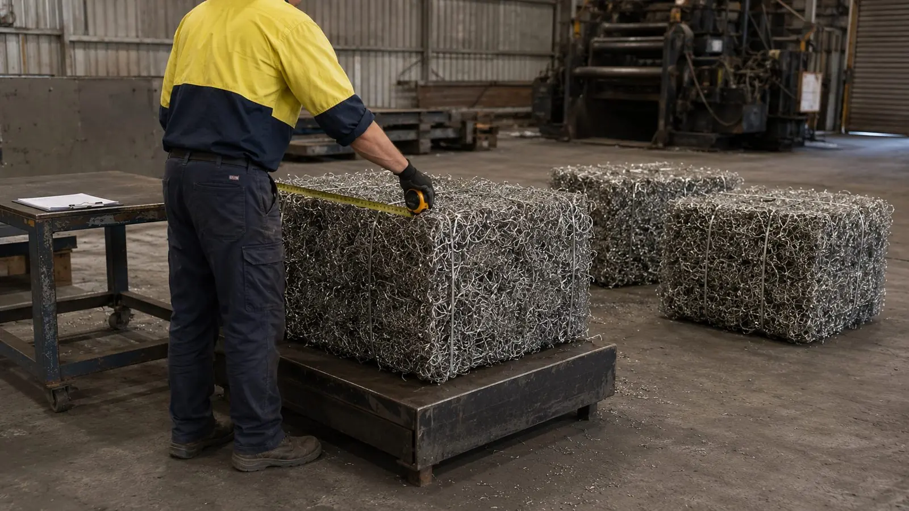

About
The metals business of Recycle Group
Global Steel exists for one reason: the group's recovery plant produces a steady stream of clean steel and non-ferrous metal, and that metal deserves a proper end market — in Australia and overseas.
Why Global Steel
Metal that has already been made once should not be wasted
Every mattress, appliance, length of cable and commercial fit-out that reaches a Recycle Group site contains metal that was mined, smelted and formed once already. Landfilling it throws that work away. Recycling it badly — mixed, contaminated, unknown origin — throws most of the value away.
Global Steel was set up to do it properly: recover the metal on our own plant, clean it to a consistent standard, and supply it to mills, foundries, manufacturers and traders who can put it straight back into production.
The name says where this goes. Steel is the world's most recycled material — around 650–680 million tonnes of scrap go back through steelmaking every year (World Steel Association) — and Australian scrap belongs in that cycle as a product, not an export commodity by the tonne.

Recycle Group
Real infrastructure, not a trading desk
Recycle Group is a Victorian resource-recovery group operating from North Geelong. Its businesses collect, process, re-use and recover material that would otherwise go to landfill. Global Steel is the group's route to market for the metal those businesses recover.
The Mattress Recycling Company
The plant that recovers 99% of the steel from every mattress it processes — the source of Global Steel's spring steel.
Recycle North Geelong
A purpose-built resource recovery centre separating material into more than 90 streams for downstream recycling, including metal.
JUNK & Trash.
The group's collection businesses, bringing commercial and household material — and the metal in it — to the facility.

How we operate
Systems behind the steel
Recycle Group operates under EPA Victoria registration and runs certified management systems for quality, environment and safety across its sites. Daily safety, training and compliance are managed through the group's own eCheck system.
- EPA Victoria registration R000312600
- ISO 9001:2015 — quality management
- ISO 14001:2015 — environmental management
- ISO 45001:2018 — occupational health and safety
Registrations and certifications are held by Recycle Group. Documentation is supplied with commercial proposals on request.
Straight answers
What we will and won't tell you
What we will tell you
- Exactly where the metal came from and how it was processed
- Current availability and what we can commit to monthly
- How it is supplied and what freight looks like to your site
- Anything we don't know yet — and when we will
What we won't claim
- Laboratory or chemical analysis we have not carried out
- Volumes the plant does not produce
- Grades we do not have
- Certifications we do not hold
Talk to the people who run the plant
Commercial enquiries go straight to the group's trade recycling team, not a call centre.